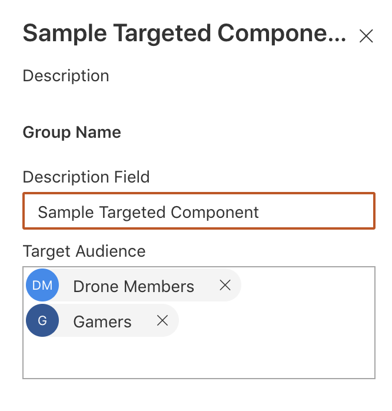

Reusable Target Audience wrapper based on SharePoint groups for custom SPFx webparts
Published on 29/01/2020
React concepts are interesting and with SPFx development I have been introduced to many concepts these past 3 years.
One concept I learnt recently is props.children.
React makes it easy to pass children to reusable components
So if you want to wrap any of your component around a common reusable react component (the wrapper component), props.children can come in handy as the wrapper is not opinionated about what goes inside it and it acts as a very generic box to wrap any other component in it.
My use case here is simple, I want to be able to bring back the Classic feature Target Audience of a webpart in Modern custom webpart, i.e to have target audience webpart property were I can pick SharePoint Groups (for now) to show or hide the webparts to a particular audience. I also want to be able to reuse this wrapper for any webparts I add in the solution.
See full source here, I have the Generic component and a sample webpart which uses the Generic component.
Here is what I have done.
Create the Wrapper Component
A generic TargetAudience React component which has the functionality of checking whether the current user is a member of any SP groups passed in the webpart.
We have two webpart properties passed to this common Wrapper component
-
groupIds, the list of SharePoint groupId's (Passed from the webpart which uses this wrapper, using PnP PropertyFieldPeoplePicker)
-
pageContext, the pagecontext of the webpart
Based on the above properties, the component does a simple call to SP rest api to check whether the user belongs to any of the passed SharePoint Groups.
If the user is a member of any of the group, I set the state this.state.canView to true and the only markup I have in this component is
public render(): JSX.Element {
return (<div>{this.props.groupIds? (this.state.canView ? this.props.children) : ``:this.props.children}</div>);
}
Tip: Always keep the reusable component simple
Use Wrapper Component to wrap your Webpart's main component
Now any webpart's main react component can use this Generic component, pass the two needed properties and have the functionality wrapped around it. the Wrapper does not care what is passed, it can be markup or a behaviour.
My sample webpart has additional webpart property, PnP PropertyFieldPeoplePicker to pass the groupIds to the wrapper.

The mark up in my sample webpart is as below, where TargetAudience is wrapping the whole markp up of my webpart's component.
Anything between the opening and the closing tag of TargetAudience is the wrapper component's props.children
public render(): JSX.Element {
return (
<TargetAudience pageContext={this.props.pageContext} groupIds={this.props.groupIds}>
<div className={styles.sampleTargetedComponent}>
<div className={styles.container}>
<div className={styles.row}>
<div className={styles.column}>
<span className={styles.title}>Sample webpart</span>
<p className={styles.subTitle}>{this.props.description}</p>
<a href="https://aka.ms/spfx" className={styles.button}>
<span className={styles.label}>Learn more</span>
</a>
</div>
</div>
</div>
</div>
</TargetAudience>
This opens up a lot of possibilities to create reusable components, like custom buttons be it ImageButton, Linkbutton, or just plain Button which behaves the same but looks different. I just cited an example which is more SharePoint relatable. Remember props.children renders mark up as is.
This is just the tip of the iceberg for this React concept, but we all have to start somewhere.
Happy coding and remember to share.